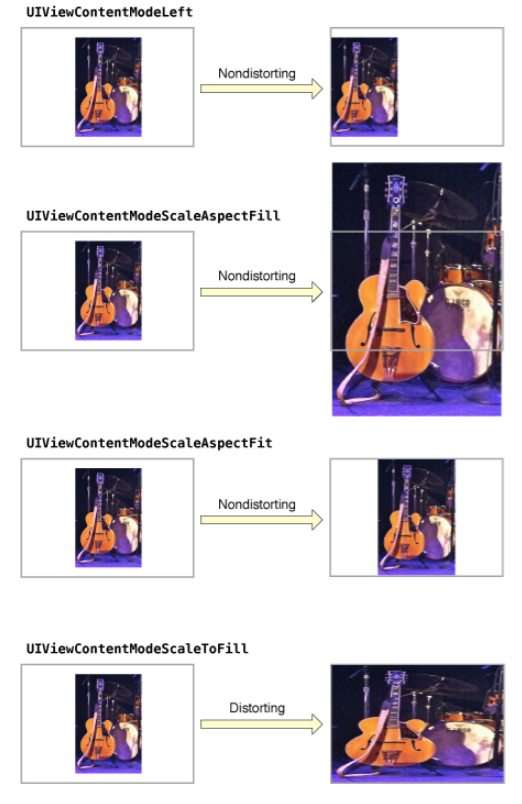

本地路径获取
a 总路径
1 | NSString *homeDir = NSHomeDirectory(); |
b Documents 目录：这个目录用于存储用户数据或其它应该定期备份的信息。
1 | NSArray *paths = NSSearchPathForDirectoriesInDomains(NSDocumentDirectory, NSUserDomainMask, YES); |
c Library 目录：这个目录下有两个子目录：Caches 和 Preferences
1 | NSArray *paths = NSSearchPathForDirectoriesInDomains(NSLibraryDirectory, NSUserDomainMask, YES); |
c.1 Preferences 目录：包含应用程序的偏好设置文件。不应该直接创建偏好设置文件，而是应该使用NSUserDefaults类来取得和设置应用程序的偏好。
1 | [[NSUserDefaults standardUserDefaults] setObject:value forKey:defaultName]; |
c.2 Caches 目录：用于存放应用程序专用的支持文件，保存应用程序再次启动过程中需要的信息。
1 | NSArray *paths = NSSearchPathForDirectoriesInDomains(NSCachesDirectory, NSUserDomainMask, YES); |
d tmp 目录：这个目录用于存放临时文件，保存应用程序再次启动过程中不需要的信息。
1 | NSString *tmpDir = NSTemporaryDirectory(); |
回到主线程的三种方法
a NSThread
1 | [self performSelectorOnMainThread:@selector(updateUI) withObject:nil waitUntilDone:NO]; |
b NSOperationQueue
1 | [[NSOperationQueue mainQueue] addOperationWithBlock:^{ |
c GCD
1 | dispatch_async(dispatch_get_main_queue(), ^{ |
GCD操作相关的宏定义
1 | //在Main线程上运行 |
计算文本宽度
1 | UILabel *label = [[UILabel alloc] init]; |
可以写一个NSString的分类:1
2
3
4
5
6
7- (CGSize)sizeForFont:(UIFont *)font width:(CGFloat)width
{
return [self boundingRectWithSize:CGSizeMake(width, CGFLOAT_MAX)
options:NSStringDrawingUsesFontLeading | NSStringDrawingUsesLineFragmentOrigin
attributes:@{NSFontAttributeName:font}
context:nil].size;
}
修改系统UITableViewCell的imageView的大小
因为cell的imageView是readonly属性，不能修改。所以可以修改imageView.image的大小来改变imageView的大小。1
2
3
4
5
6
7
8// 设置cell图片大小
UIImage *cellImage = [UIImage imageNamed:@"cellImage"];
CGSize imageSize = CGSizeMake(40, 40);
UIGraphicsBeginImageContextWithOptions(imageSize, NO, 0.0);
CGRect imageRect = CGRectMake(0.0, 0.0, imageSize.width, imageSize.height);
[cellImage drawInRect:imageRect];
cell.imageView.image = UIGraphicsGetImageFromCurrentImageContext();
UIGraphicsEndImageContext();
一行代码移除视图的所有子视图
1 | [view.subviews makeObjectsPerformSelector:@selector(removeFromSuperview)]; |
视图阴影属性
layer.shadowOffset
默认Defaults to (0, -3)。第一个参数左右偏移，正为右，负为左；第二个参数上下偏移，正为下，负为上。
layer.shadowOpacity
默认Defaults to 0。选择范围[0, 1]。
layer.shadowRadius
默认Defaults to 3。虚化半径，值越大，虚化的范围越大，颜色越淡。
UIViewContentMode值枚举
